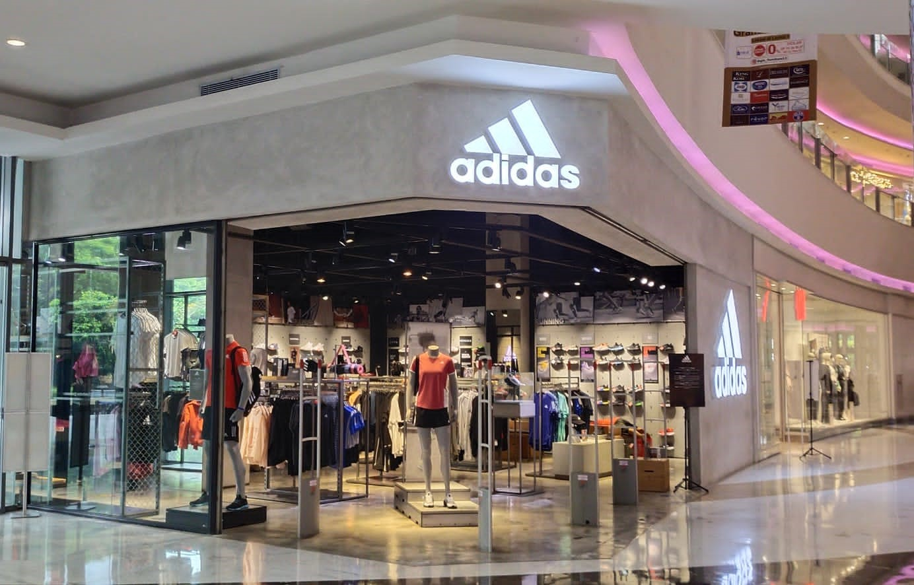

Curtain Wall
Mall Depok Adidas Store
📍 Jawa Barat| ± 50 m²
Sistem Stick Mullion 150x55mm +
Stopsol Blue Green.

ACP Cladding
Gedung Utama RS Mitra Sehat
📍 Bekasi | ± 3.150 m²
ACP Seven PVDF 4mm Metallic Silver +
Rangka Galvanis.

Kaca & Kanopi
Flagship Showroom Otomotif
📍 BSD City, Tangerang | ± 1.450 m²
Spider Glass Tempered
12mm + Kanopi Laminated.